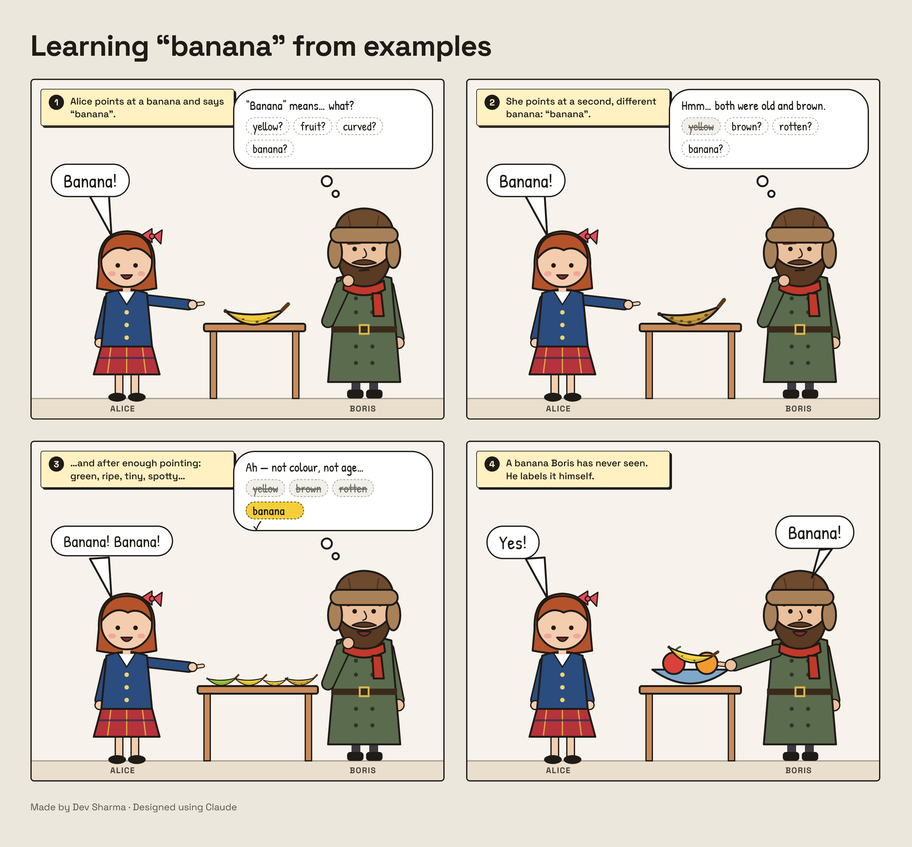

Probably Approximately Useful
VC dimension and the Fundamental Theorem of PAC Learning
Computational learning theory is a distinctive model within complexity theory. It asks what a learner can learn from labeled examples. Can it label new examples correctly? How many examples does it need?
We start with an example from David Abel. Alice is teaching Boris English. She starts with the word "banana".

- Alice points at a banana and says "banana". Boris does not know what the word means. It could mean yellow, fruit, curved, or banana.
- She points at a second banana, an old brown one. This rules out yellow. Boris now wonders about brown or rotten.
- She shows more bananas: green, ripe, tiny, spotty. Each one rules out more guesses. Only "banana" fits them all.
- Boris sees a banana he has never seen before. He labels it himself, and he is right.
Boris's guesses form a hypothesis class. Each example rules out the guesses that disagree with it. Boris has learned when he labels a new example correctly.
The main application is machine learning. The question we care about most is how many examples a learner needs. The answer depends on the hypothesis class $\mathcal{H}$, and in particular on whether it is finite or infinite.
For a finite class $\mathcal{H}$, about $\log|\mathcal{H}|/\varepsilon$ examples suffice. But most useful classes are infinite. Thresholds on $\mathbb{R}$ already have infinitely many hypotheses, and they are easy to learn.
The right measure of size is the VC dimension. The main result of this site is the Fundamental Theorem of PAC Learning: a class is learnable from finitely many samples if and only if its VC dimension is finite. The last chapter asks the complexity theorist's question: when is learning also efficient?
Who this is for
Students who have taken 15-455 (Undergraduate Complexity Theory). We assume comfort with proofs, asymptotic notation, and basic discrete probability (union bound, expectation, concentration). No machine learning background is needed.
Notation
| $\mathcal{X}$ | domain (the set of possible inputs) |
| $\mathcal{D}$ | unknown distribution over labeled examples $\mathcal{X} \times \{0,1\}$ |
| $S$, $m$ | sample $((x_1,y_1),\dots,(x_m,y_m)) \sim \mathcal{D}^m$ and its size |
| $\mathcal{H}$, $h$ | hypothesis class, and a hypothesis $h : \mathcal{X} \to \{0,1\}$ |
| $L_{\mathcal{D}}(h)$ | true error $\Pr_{(x,y)\sim\mathcal{D}}[h(x) \ne y]$ |
| $L_S(h)$ | empirical error: the fraction of $S$ that $h$ mislabels |
| $\varepsilon$, $\delta$ | accuracy and confidence parameters |
| $d$ | VC dimension of $\mathcal{H}$ |
| $\tau_{\mathcal{H}}(m)$ | growth function: the most labelings $\mathcal{H}$ gives any $m$ points |
Chapters
- Learning from Samples: the PAC model and finite hypothesis classes
- Shattering & VC Dimension: measuring the size of infinite classes (interactive)
- The Sauer–Shelah Lemma: from exponential to polynomial (interactive)
- Uniform Convergence: why empirical error tracks true error
- The Fundamental Theorem: finite VC dimension ⇔ PAC learnable
- Beyond: connections to complexity theory, recent results, and deep learning
Scroll down to read the whole site in one go, or jump to a chapter from the bar at the top.